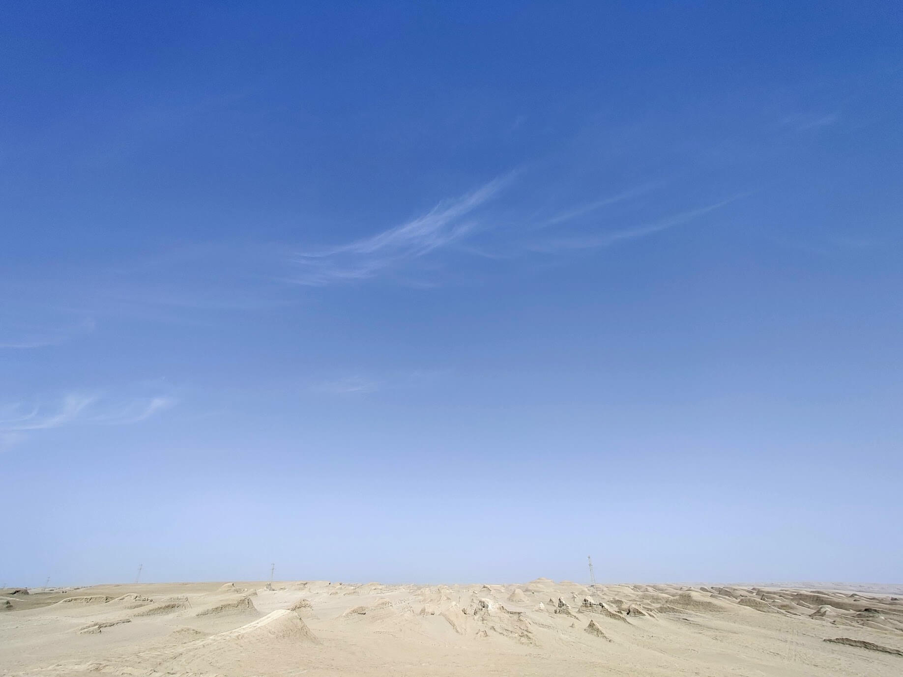
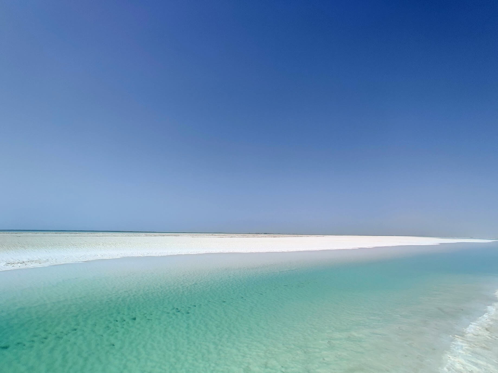
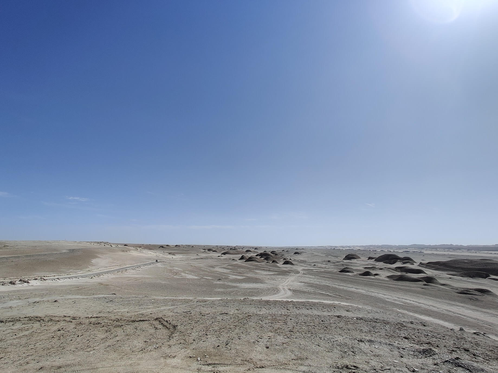
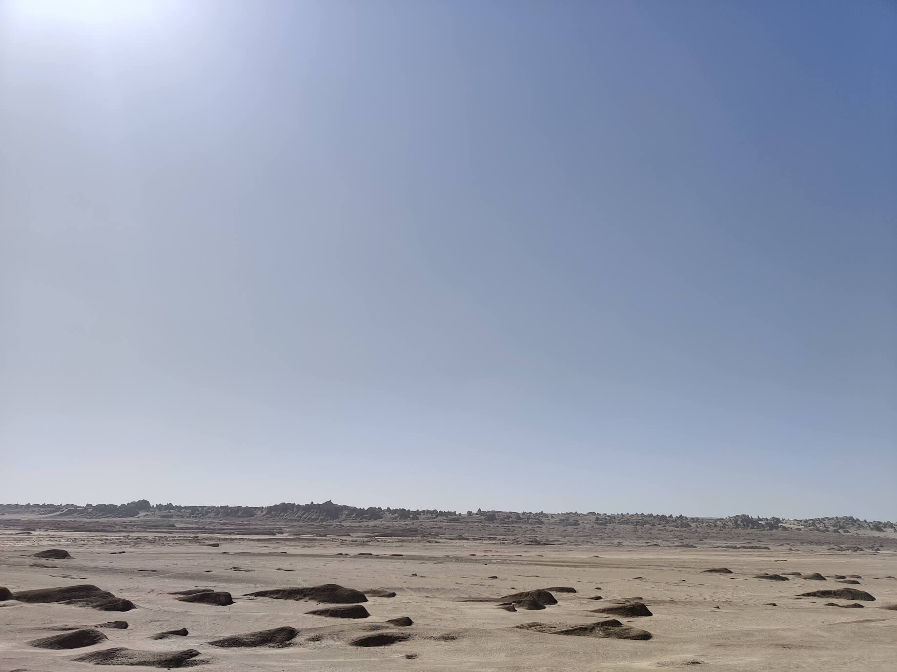
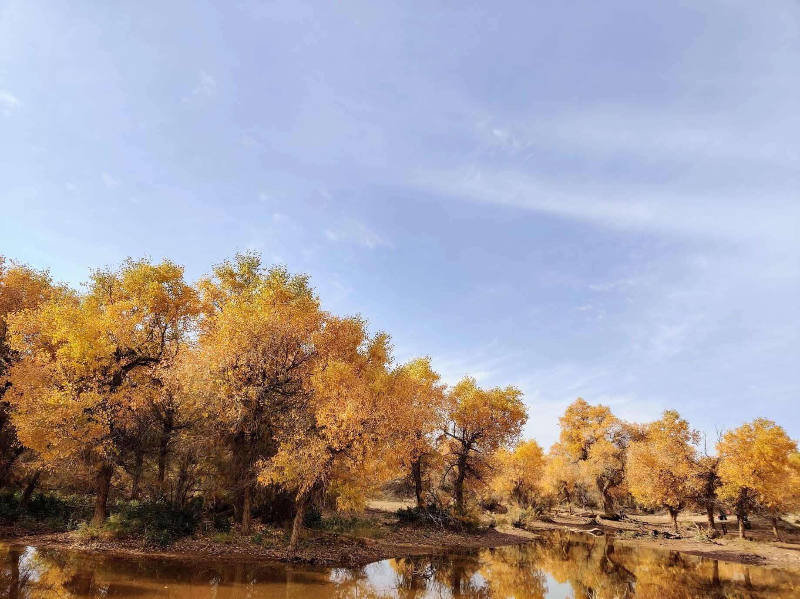
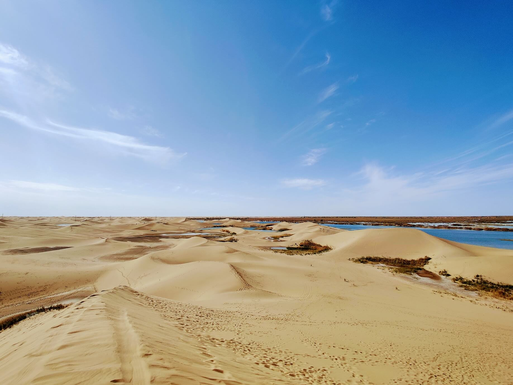

西北大环线之旅
今年因为疫情，原本以为一年一次的出游计划会中断，至少无法出远门了，但是没想到国内疫情控制得很好，所以当听说有机会去西北大环线自驾的时候，毫不犹豫地决定要跟着小伙伴一起去了。另外，今年难得十一遇上中秋，假期比往年多了几天，虽然我还是请了几天假，但是这样的机会本就不多，所以还是要珍惜呀。
西北大环线应该是最近几年才开始热门起来的，由于疫情的因素，大家都无法出国门，所以今年也是特别热门。我们自驾的路线是先在西宁集合，然后从西宁出发，第一天：青海湖-茶卡盐湖-德令哈；第二天：小柴旦湖-东台吉乃尔湖-水上雅丹-柴旦镇；第三天：翡翠湖-火星营地-石油小镇-瓜州县；第四天：瓜州县-策克口岸-居延海；第五天：额济纳旗胡杨林景区；第六天：张掖丹霞-兰州；第七天：兰州-西安，在西安游玩半天，最后回杭州。完整的行程可以看我制作的 Google Map。行程安排得满满当当，好在总体还算是比较顺利，虽然中间也发生过一些不愉快的事情，但是最终都完美地解决了。
旅行的意义除了看别处的风景之外，也在于给自己一个体验不同的生活方式的机会，还有就是认识各种不同的人，这次结伴出行的小伙伴们，也是我们在网上认识的。原本是陌生人的我们，偶然间相识并一起分享旅途中的点点滴滴，这也是一种缘分吧。
接下来请欣赏我流水账式的旅行日记(•̀ᴗ•́)و ̑̑
2020/9/30 杭州-西宁K392
早上 4 点就被室友和他的猫吵醒，然后就睡不着了，躺在床上胡思乱想了一阵，关于接下来的行程，关于自己最近生活和工作现状的方方面面，突然间感到有些孤独。
稍微眯了一会儿就到 5 点了，然后起床上厕所洗漱，微波炉热了芝士牛肉卷当早饭吃，结果锡纸没完全摊开糊了一个角而另一边还是冰的，随便吃了两口然后开始整理行李箱，写下九月最后一篇碎碎念，复制到博客并提交发布，出门。
好久没有起这么早过了，叫滴滴等了 5、6 分钟才有人接单，然后坐地铁去杭州站，中途需要转 5 号线，结果我自作聪明地提前下车换乘了 5 号线，然后发现时间居然多了接近十分钟，心里暗骂一声傻逼。不过还好最终还是提前半小时赶到了。在车站和小伙伴们汇合之后，聊了没多久就进站准备出发了。
上车整理完东西，才意识现在居然才 8 点多，平时这个点自己才刚刚出门吧。也许以后我也应该继续像今天一样坚持早起。早上看到路边晨跑的人也在想，他可能每天 10 点钟就睡觉了，但是晨跑洗漱完吃完早餐后，依旧还有两个小时去做其它事然后再去工作。这就是早起的好处，习惯早起的人可能比其他人多了五分之一的生命吧。
接下来要在火车上度过漫长的 32 个小时。车上无事可做，能做的只有聊天、睡觉、玩手机或者看书。当然，结伴出行有个 buff 就是可以一起玩棋牌类游戏打发时间。于是，我们三个和对面床位下铺一起玩起了双扣。就这样玩了一下午，从杭州到安徽再到河南，睡一觉起来明天应该就到陕西了，然后经过兰州，下午再到终点站西宁。这样就又解锁了一列从始发站到终点站的火车，之前解锁了从上海到拉萨的 Z164，这次是杭州站到西宁站的 K392。其实我还挺享受坐火车的，平时生活节奏太固定，偶尔体验一下这种和陌生人共处一室的感觉也挺好。然后也有可能认识一些新朋友，当然前提是，你要始终保持开放的心态，愿意和人聊天，了解他人的生活，倾听他们分享自己的经历和故事。
也许自己这方面还需要加强吧，有时候没说几句就觉得索然无味了。自己内心里面其实还是非常封闭的一个人，非常在意外界对自己的看法，无法做到完全放开自己。这也说明了自己内心依旧是一个非常自卑的人，无法做到全盘接纳自己，无法以完全尊重事实的态度对待自己当下的处境。
其实承认自己没那么好有多难呢？只要克制住自己的虚荣心就可以了。还有要提醒自己，你只是一个普通人，来自一个普通的农村家庭，接受的是很一般的教育，工作也没什么亮点。但是，你应该接受自己的身份，而不是感到焦虑和自卑，因为你的特殊性不是由这些外在条件决定的，而是取决于你能为他人创造多少价值。心里始终装着别人的人，就不会有太多时间和精力只关注自己了。这也是自我意识太强的人的一种自我解救的方法。
2020/10/1 西宁
今天早上很早就醒了，当然是被吵醒的，每到一站都能听到列车员过来提醒乘客下车，所以感觉自己基本没怎么睡着过。接下来躺了一整天，看书、睡觉、胡思乱想。这时候才觉得时间过得好慢。而且下午的时候隔壁床位还有讨厌的小孩子，不停地发出各种尖叫声、吵闹声等等，觉得心烦却也无可奈何。在想如果以后自己有了小孩也这样不听话，那我是不是也只能束手无策。
下午 4 点多终于到西宁站，出站排了老长的队，然后去酒店。整理完东西，洗了把脸洗了个头，之后和小伙伴一起去附近逛逛。走了好几条街还是没法决定去哪儿吃晚饭，最终还是回到了最开始进去过的餐馆点餐。
晚上等大家都到齐之后，我们和其他小伙伴互相认识了一下，第一次见面，感觉还不错。吃完饭大家一起去街上逛夜市，我忘记带我的自拍杆了所以买了根自拍杆。然后牛哥开车带我们去市区里好玩的地方逛了逛，拍了城市夜景，最后 10 点多回酒店洗漱上床休息。
第一天过得挺轻松的，希望接下来几天也能玩得开心～
2020/10/2 西宁-青海湖-茶卡盐湖-德令哈
今天早上 5 点半起床，洗漱之后整理好行李 6 点多向青海湖出发。差不多开了 3 个小时才到湖边，藏区风景真的好美，一路上也拍了不少照片。
我们在湖边的一个度假村附近下车，去青海湖边打卡拍照。原谅我要开始发自拍了(◐‿◑)
差不多在湖边呆了一个小时，然后继续出发。
西北是风力资源丰富的地方，路上有很多这样成片的风力发点机场。
路上有一搭没一搭地聊着，差不多又开了两个小时，到了茶卡盐湖天空一号景区。人不多，天空非常干净，湖面倒映着蓝天，并且可以清晰地看到浅白色的湖底沉积物。远处是一排排的风力发电机，地平线尽头是绵延的群山，和天空连结成一片。看着这样的风景，一切烦恼都会烟消云散。
接着我们出了景区，在路边吃了自热米饭当午餐。没有地方停车，所以就直接停在路口一个废弃的亭子附近，风很大，吹得人冷飕飕的。这也算是一种特殊的体验吧。
下午继续向德令哈出发，差不多两个半小时到，然后发生了一件让大家都很无奈的事情，我们提前订好的酒店被酒店方以“未提前打电话确认”为理由拒绝给我们登记入住了。最后只能报警找警察过来解决，但是他们也无权管辖，所以我们只好自己另外找住宿，耽搁了差不多 3 个多小时才把这事解决。我们另外订了两间房间，运气不错居然还有房间能订到，虽然是不同的旅馆。然后分成男女两队入住这两间房，今晚大家只能将就一下了。但是还得小心不被酒店发现。晚上大家一起去小餐馆吃饭，安抚一下牛哥的情绪。这事的发生说明旅途路上一定会有意外，所以要提前做好心理准备。像这种订好的酒店被取消的事情还好解决，但是有些事就说不定了。
2020/10/3 德令哈
今天的行程是先去小柴旦湖，然后再去东台吉乃尔湖和水上雅丹，最后折返柴旦镇住宿。这一路上土地变得沙漠化，各种因风蚀而形成的特殊地貌开始出现在我们眼前。
开了两个半小时到达小柴旦湖，我们非常没素质地越过了路边铁丝网，为了到湖边打卡拍照。
湖水波澜不惊，阳光不算强烈，但是湖边的风还是吹的人有点冷。
到这里土地已经开始沙漠化了。

到东台吉乃尔湖的时候才感受到十一假期人满为患是什么样，堵很长的车，最后我们只能把车停在路边，然后走到湖边。这里不收门票，管理人员不足，这也是为什么这里游客会这么多、场面这么混乱。
这里也是盐湖，盐分结晶后形成湖边白色的湖岸。
由于人太多，呆了没多久就出来了。再次在路边风餐露宿，吃自热米饭和煮泡面。接着我们继续向乌素特（乌苏特就是「水上」的意思）雅丹地质公园出发。离得不远，而且景区门票依旧对浙江人免费，第一次觉得受到了反向的“地域歧视”。
雅丹是小土包的意思，雅丹地貌形成之后，由于地壳运动，青海湖的湖水灌入这一地区于是形成了这样的“水上”雅丹的特殊景色。
公园很大，我们坐观光车到景区深处逛了逛，拍了点照片，然后觉得有点视觉疲劳，于是就出来了。
路上的雅丹地貌，看着不免让人联想到少女的乳房，原谅我的色情 ( *・ω・)✄╰ひ╯。
之后我们折返回柴旦镇住宿，牛哥需要先送他女朋友回去，然后明早再来接我们出发。
2020/10/4 柴旦镇
凌晨 4 点多醒来，有点失眠所以开始补写游记。我们住的是当地一个小区内的民宿，两室一厅，此刻我正躺在客厅的床上写这篇旅行日志。现在差不多凌晨5点半，一个小时后我就要起床洗漱，然后和大家一起准备出发。今天的行程是先去翡翠湖（离柴旦镇不远），接着是火星营地，然后是玉门关（可能来不及去），最后到瓜州县住宿。希望一切顺利吧。
早上 6 点半起床，洗漱完整理了下行李，然后一起去吃早餐，随便吃了碗牛肉面，牛哥也差不多时间到，等大家吃完然后就出发回去整理行李了。8 点左右出发，先去了附近的大柴旦湖，也就是翡翠湖，由于湖水中含有矿物质，所以呈现出漂亮的绿色，而且随着水分蒸发得越多，颜色也就越深。
下面这张照片拍的是我们在离公路不远处发现的一个人工挖掘出来的小水渠，我觉得比翡翠湖的景色更好看。四周荒无人烟，寸草不生，只有这里有一汪清泉。虽然这水应该并不能喝😂。
之后我们向火星营地出发，路上的车越来越少，景色也越来越荒芜，经过的一些地方可能方圆几十公里之内都看不到任何生物存在的迹象。
快到火星营地的时候，需要经过一段颠簸的土路，远处高高扬起的风沙宣示着这里的荒凉。
在颠簸的土路上开了半个多小时，才到了火星营地。营地里有一些帐篷和四四方方的工作仓，四周是自然形成的丹霞地貌和一些形状奇怪的巨大的沙丘，由于风实在太大，我拍完照就上车了。
等出了火星营地的时候已经是下午了，我们找加油站加满油，然后开始向石油小镇出发。
到石油小镇的时候差不多已经快日落了，于是赶紧冲到售票处买票进去，匆忙中拍了日落，并逛了逛废弃的小镇里的一些建筑。从建筑风格和墙上的标语能明显看出上个世纪那个特殊时代的痕迹。
出了石油小镇差不多快天黑了。我们开始向瓜州县出发，今晚在那里住宿。
等到的时候差不多十一点了，有点闹肚子，上完厕所洗漱完就赶紧上床休息了。
2020/10/5 瓜州县-策克口岸-居延海
今天的行程不会像昨天那样太赶，早上慢悠悠地吃了早餐才出发。
目的地是额济纳旗，先找预订好的民宿入住，然后去居延海和策克口岸。
一路上经过无人区，有野骆驼和野山羊出没。
开了差不多六个小时才到额济纳旗，这里最著名的当然还是胡杨林，可是我们到的时间有点晚所以打算明天再去胡杨林景区逛。
到民宿放下行李后去附近吃了午饭，然后出发去策克口岸，由于时间比较赶，所以到口岸拍了中国和蒙古国的界碑、国门，然后逛了逛口岸的小市场就出来了。
赶在日落前到达居延海，日落很美。
出来的时候刚好天黑，之后开始往回折返。
回到市区后，我们一行人找了个烧烤店，点了当地的特色烧烤驼肉羊排等，吃完就回去洗漱休息了。晚上依旧住的是小区里的民宿，我睡在一张行军床上，边上是一个大鱼缸，今晚就和这些可爱的小鱼儿一起入睡了。
2020/10/6 额济纳旗胡杨林
今天早上 7 点不到就醒了，然后上厕所洗漱完才不到 7 点半，刷了会儿手机开始写游记。昨晚睡的还不错，差不多睡了有 6 个小时。今天去逛胡杨林，刚到景区门口就发现已经有一大堆人了。进去买完票，然后开始从一道桥开始逛。景区入口人很多，一直走到二道桥才发现不错的适合拍照的地点。金色的胡杨林有点像枫叶林，但是比枫叶林更特别一些，因为每棵胡杨长得都不一样。

之后我们从二道桥坐大巴车到七道桥，然后走到大巴上车点去八道桥。八道桥的特色是沙漠，我从来没有去过沙漠，所以在这里多玩了一会儿。然后还为景区做了点贡献，捡回了一袋子垃圾😂。

从八道桥出来后就直接坐车去了四道桥。这边有很多树龄比较大的胡杨树，有的是明朝初年到现在的，想到数百年前这些树就在这里了，不免觉得好神奇。不出意外的话，几百年之后它们还会继续站立在这里。
跟随人群走到四道桥出口之后已经快一点了，觉得逛得也差不多了所以打算回去。等车的时候同行的一个小姐姐被蜜蜂蛰了一下，不过还好似乎不太严重。
之后继续向下一个目的地张掖丹霞出发，开车差不多要 6 个多小时。中间还经过酒泉卫星发射基地，去门口路过了一下，可惜没遇上发射卫星😂。
一路看书、睡觉，时间很快也就过去了。晚上10点左右到达丹霞景区门口的民宿，登记入住后，洗漱完整理了下东西早早就睡了。
2020/10/7 张掖丹霞
昨晚差不多 11 点半就睡了，但是早上醒得有点早，差不多 6 点就醒了，然后就睡不着了，任由脑子里各种思绪翻飞了一阵，然后浅睡到 7 点 20 才起床洗漱，搞定之后刚好 8 点。下楼发现几个小伙伴已经在大厅等我了，于是一起出发去景区。在路边小餐馆吃了个早餐，一点也不好吃，感觉早起的整个心情都被破坏了😏。长了个记性，以后不要进那些在路边招揽顾客的餐馆，特别是景区附近的。
进北门售票厅买了门票，然后就进去坐大巴去第一个观景台。
人很多，不过没有昨天的胡杨林景区人多。由于光线比较强，所以拍出的照片效果也一般，不过还好可以用 Google Photos 的滤镜效果挽救一下，Google 牛逼~
听人说下雨天的丹霞更好看，不知道有什么道理。
我们逛得算是比较快的，差不多在一个观景台待半个多小时，到逛完最后一个景点的时候才 12 点不到。
出景区的时候写了张明信片寄给自己，还怂恿小姐姐给我也写了一张，现在想想觉得当时的自己能有这个勇气已经挺反常的了(•̤̀ᵕ•̤́๑)ᵒᵏᵎᵎᵎᵎ
小伙伴接上我们几个之后，开始出发去本次自驾的最后一站：兰州。午饭在一个小县城吃的麻辣烫。到这里以后发现气温已经没那么低了，正午时分一件长袖足矣。
一路沿着祁连山脉前行，晚上 7 点左右到达兰州，找了个算是当地特色的餐厅，作为我们这一次结伴旅途的散伙饭。这一路虽然也有一些不愉快的经历，但是好在最终都没有演变成更糟糕的事件，总的来说我还是挺享受这次旅行的。
当然，如果还有下次这样的自驾的话，我希望最好还是和熟悉一些的人一起。旅行虽然也是一种认识新朋友的机会，但是这里的新朋友最好是朋友的朋友。如果是陌生人的话，总觉得哪里不对劲，好像隔着一层膜。也许是因为我们都不擅长和陌生人打交道吧，尤其是我。不过这次认识的小伙伴都非常好，虽然大家都不怎么爱说话，但是都是很善良的人儿。
吃完散伙饭，牛哥先送我们去火车站，下车的时候刚好下起了小雨，也许老天也在为我们的分离感到不舍吧（好矫情~）。火车站外面由于人太多我和我的小伙伴走散了。在候车室发生了件好玩的事，检票口站着几个戴小红帽的人，嘴里一直喊着我们要坐的那个车次已经可以进站了的话。等到和小伙伴们汇合后才知道，原来他们是提供搬运服务的人，目的是收费 10 块钱然后你可以进人更少的地方等待发车。我这才明白，怪不得他们喊得这么卖力呢～
这次我依旧睡上铺，上车收拾完东西之后就准备睡了。和这次旅行认识的小姐姐约定下次去武汉玩的时候找她带逛，她也答应了，好开心也很期待～
2020/10/8 兰州-西安
早上睡到 6 点多，昨晚比我预想的要睡得更好。下去上了个厕所，然后整理完东西就躺着发呆了。
这一路看到的风景让我觉得，旅行对自己有更多、更大的意义，也意识到了旅行的重要性。不仅仅是为了看风景，还有如何与自己的想法相处。旅行也提供了一个全面认识自己的机会。还有认识新朋友的机会，虽然我们并不总是会在旅途中遇到值得交往的人。另外，我发现自己在旅行的时候，会变得更愿意与人沟通。也许是因为此时的自己没有任何压力，可以卸下自己平时的防备，而且也有了一个结交他人、和他人聊天的理由吧。我觉得这就是这趟旅行带给我的最大的收获了。
早上 8 点多到达西安站，去火车站附近寄存了行李然后吃了羊肉泡馍当早饭，火车站附近的东西又贵又难吃是一定的，不管哪儿都一样。
因为时间有限，所以决定去逛逛西安城墙，作为这次旅行的“收官之战”。可能是因为早上吧，城墙上几乎没什么人。
看到有租自行车的地方，于是我们决定骑车绕城墙一圈。
不过还没骑多久就开始下起了小雨。我们在一个自动售货机下面躲了一会儿雨，聊了一会儿天，然后继续往前骑。
绕过一个游客很多而且有导游讲解的西安皇城沙盘模型，导游在讲解当年发生的玄武门事变，听了一会儿觉得有点无聊，于是继续往前骑。再令人称道的丰功伟业也终将烟消云散，而我们中的大多数人只不过是其中的过客。
一个小伙伴抱怨骑得腿酸，所以只好一边鼓励她一边继续往前，因为我们赶到车站的时间会比较紧，我们要坐下午 1 点 40 的高铁。骑过东城墙的时候，一看时间果然快要来不及，于是我们赶紧骑到终点去还车，然后跑去车站附近取行李。等拦上出租的时候已经 12 点 40 了，这边到西安北站不堵车也要 40 多分钟，而这个时候路上不堵是不可能的。一路上我们都已经在讨论，如果没赶上能否改签以及晚上住哪的问题了。结果司机师傅就比较厉害了，说一定给你们按时送到。最终还真的让我们刚好在发车前 5 分钟刷身份证进去了。一切有惊无险，有惊无险~
回杭州的高铁上一路无话，把 GOTs1 剩下的两集看完了，然后睡了一觉+冥想。边上坐了一个小姐姐，想搭讪，但是一直找不到合适的话题，而且中间她在看电视剧，笑得特别大声，我觉得她有点奇怪，于是就放弃了搭讪的想法了。Anyway，这次西北之行已经认识了一个小姐姐，也算是一个额外的 bonus 了。我觉得我现在已经可以打开心门，保持开放的心态去认识他人了。能有这种转变，就够了，改变都是从一点点开始的。
晚上差不多 9 点多到达杭州东站，出站的时候又和小伙伴们走散了，于是直接往地铁站赶，结果上了地铁又遇到了两个小可爱，这世界可真小。晚上差不多 10 点半才到房间，洗了个澡，简单收拾了下东西就睡了。
旅途结束了，但是我的心还留在大西北。下次旅行会是什么时候呢？